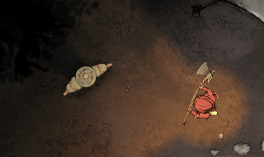
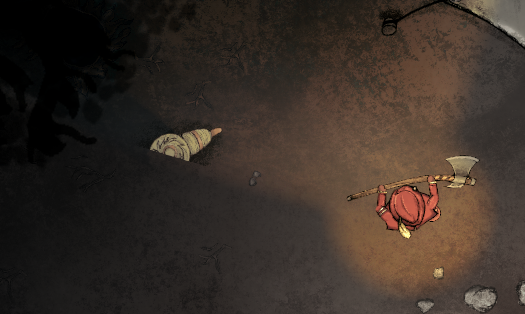

Skills Used: C#, Unity, Network Engineering, HTML/CSS, Systems Arcitecture, Teamworking & Management, Graphics Programming
Download and play it on itch.io here!

Nightmorn was a multiplayer cooperative 2d top down horror game where you fight intelligent super natural monsters using a range of equipment.
Nightmorn was the third year group project I worked on with a team of 10 other people, including 3 other programmers.
We continued to develop the project for roughly a year after university in an graduate scheme called incubator, which ran out of funding in March and we opted to cease working on the project after that.
During the projects course I served as lead programmer and technical director of the company we formed post university until I had to stepdown to health issues in Feburary.
The game itself is actually quite fun and the demos are still avaliable on itch.io (linked above)
For this project I serve as lead programmer and netcode specialise and systems arcitect - but most of my work is UI programming with Unity UI-Toolkit.
I designed a lot of the main overarching such as the equipment system, the basic entity system that monsters and players inherit from, level life-cycling and loading, the audio system and the view cone system.
The other programmers specialisied in the general AI arcitecture for the monsters the implementation and tuning of these monsters, and the complicated player animation system.
The View System
Nightmorn has a viewcone to restrict each player's view to make the game feel more isolating. The effect has a small circle around the player, and a cone where they are facing.
The area out side the cone is desaturated, while monsters arent visible at all.
Theory
To create the view cone, a mesh is generated by raycasting against the scene so environmental objectises like walls and trees can block the cone.
The edges of the cone need to blurr to create a smooth transtion. Monsters need to only appear inside the view cone and be hidden outside it.
Mesh Generation
One Meshes is generated composed of two islands, a full circle in a small radius around the player, and a pie slice extending a large radius from them. Broadly the same maths can be used for generating both meshes which is done by the job below.
The circle/cone meshes just configure some of the input variables differently.
The job sets the vertex positions for each far vertex from the center vertex by raycasting against the scene's view objesticle physics layer, this gave our designers fine control over what blocked vision.
Since we ported the game to Unity 6.3, I was able to rewrite the view system mesh generator to use the Burst Job below as in 6.3 Unity have added a new 2d physics engine which supports parallel ray casting operations off the main thread - something the legacy 2d physics engine did not support at all.
This enabled me to use Unity's Burst Compiler and C# Job system to write a job that is cross compiled to C++, optimised by LLVM and run in parallel. As a result in the old version of the game, the view system took roughly 2ms to generate the mesh each frame to 0.11ms. (in the old version of the game, the view system took the most time each frame)
The indices for the mesh are set at start time and never updated, I use the C# Job System and burst compiler to also set the mesh data into the underlying mesh structure through unity's advanced mesh api, the performance imrovement of this is negligable however and there is no downside to using it.
[BurstCompile]
private struct ViewMeshGen : IJobParallelFor
{
[ReadOnly] public PhysicsWorld World;
[ReadOnly] public PhysicsQuery.QueryFilter Filter;
public Vector2 CircleOriginPosition;
public Vector2 ConeOriginPosition;
public float ConeDistance;
public float CircleRadius;
public float ConeAngleDelta;
public float CircleAngleDelta;
public float ViewDirectionAngle;
public int SplitPoint;
public bool CircleOnly;
[NativeDisableParallelForRestriction, WriteOnly]
public NativeArray<float3> vertices;
public void Execute(int index)
{
bool skip = CircleOnly && index < SplitPoint;
Vector3 originPosition = ConeOriginPosition;
float maxRayDistance = ConeDistance;
float angleDelta = ConeAngleDelta;
if (index >= SplitPoint)
{
angleDelta = CircleAngleDelta;
maxRayDistance = CircleRadius;
originPosition = CircleOriginPosition;
}
float angle = -(index * angleDelta);
if (index < SplitPoint)
{
angle = ViewDirectionAngle - (index * angleDelta);
}
if (!skip)
{
float3 viewDir = VectorFromAngle(angle);
var input = new PhysicsQuery.CastRayInput()
{
origin = originPosition,
translation = new PhysicsRotate((Vector3)viewDir).direction * maxRayDistance
};
var result = World.CastRay(input, Filter, PhysicsQuery.WorldCastMode.Closest, Allocator.Temp);
vertices[index + 1] = result.Length > 0
? (Vector3)result[0].point
: (float3)originPosition + viewDir * maxRayDistance;
}
else
{
vertices[index + 1] = originPosition;
}
if (index == 0 || index == SplitPoint)
{
vertices[index] = originPosition;
}
}
[MethodImpl(MethodImplOptions.AggressiveInlining)]
private static float3 VectorFromAngle(float angle)
{
return new float3(math.cos((float)math.radians(angle)), math.sin((float)math.radians(angle)), 0);
}
}
Shader Pass
The first shader pass writes the mesh into a depth buffer, this texture is then used as a mask for every other step.
The shader for this is incredibly simple

Shader "Custom/DepthWrite"
{
Properties
{
}
SubShader
{
Tags
{
"RenderType" = "Opaque"
"RenderPipeline" = "UniversalPipeline"
"Queue" = "Geometry"
}
Pass
{
Blend Zero One
ZWrite On
}
}
}
The effect is then composited to the main colour attachment through this full screen shader which applies a hue, saturation and intensity operation to the colour of the environment outside of the view texture.
There is a fade between the cone and the environment through a gaussian blur.
The sprite cull shader just culls the sprite outside of the view cone, it is used for monsters primiarly.


The Equipment System
Nightmorn required developing a complex equipment system which had to interopate with the character puppet animation system to allow each piece of equipment its own animations.
Types of equipment
There are many types of equipment the player can use, these are broadly split into weapons and utilities.
Equipment can also occupy one of both of the character's hands, for example a rapier and a lantern can be wielded at the same time, or just a great axe can be wielded.
Players are restricted to 3 pieces of equipment each, 3 one-handed items or 2 one-handed items and a single two handed item.
Items could have very complex behaviour, such as the bear trap item - a two handed item a player could put on the ground to trap or brielf trap monsters.
Some items require a charge effect (axe swing), some operate instantly (lantern on/off), some have a cool down after use.
In the original version of nightmorn the PlayerEquipmentMP was a horrible class that handled everything and morthed into this 1800 lines monster with huge confusing selection statements that everyone hated touching because it was certain whatever you did would break something.
When we opted to rebuild much of the game, we primiarly chose to because of how inoperable extending the current equipment system was. And without the time pressure of university work, and the knowledge of what was needed to begin with we where able to design and implement a much better system.
This new system divided the general equipment system into 3 major classes, animation, equipment handler and actions, we also opted to break equipment down into common building blocks. Two handed items in the old system wherer a single class instance which caused a lot of problems in the old system. In the new system a two handed item is composed of two item instances.
One handed items generally had one action they could make, their primary action. When holding two one handed items, one action as the "primary" item and the other as the "secondary" item, left/right click invoked primary/secondary action.
Two handed items generally had two actions, they could behave like two one handed items just permently paired together.
The addition of the slot container class made life much easier. A slot container represents two pieces of equipment (2x one handed or 1x two handed) and only provided state information used by the rest of the system for animation and action invokcation.
When switching equipment a slot contain was replaced by another one to become the active set.
Interop with Animations
The general player animation was also significantly overhauled by a colleage, while I handled the bulk of implementation of the equipment handler and action system.
The Slot containers are what enabled a significantly more usable animation system interopability however.
The Audio System
The largest major gameplay system I had a big hand in with nightmorn is the new audio system. Like most things, audio play back in the university version of the game was pretty scuffed.
Types of sounds
Games has a few types of sounds and audio that need to be played.
- Monster Sounds
- Player equipment Sounds
- Character voice lines
- Music (Local client)
- Environment ambienance (Local client)
- UI SFX
Some of these sounds need to only be heard on the local player's client and not by everyone else. The system I made primarily dealt with Monster and player equipment sounds.
These had the requirement of, in general, being heard by everyone connected to the game. The system I came up used two main pools of Audio emitters, the ServerEmitter pool and the LocalEmitter pool. The ServerEmitter pool is created an managed by the host client (Nightmorn uses a P2P arcitecture with a hosting player everyone else connects to). This pool is taken from to play sounds that are heard on all clients.
As all the monster logic is done on the host, having monster sounds be host originating just made sense. Any sounds Made by the hosting client (to be heard by everyone) is also run through this pool.
The localEmitter pool is created by each connecting client and is primarily for sound latency reduction. A sound made by a client sound be played back immediately for that client without waiting for the command to transact the network stack to the server and back.
So when a sound on a client is requested, it enters the local client's audio manager who immediately plays the sound for the instigating client using a local audio emitter. It also sends a command to the host to play the same sound using a server audio emitter for everyone except the instgiating client. This ensures immediate audio feedback for a player action like a sword swing.
The other purpose this audio system had is as a data input for the monster AI system - the monsters respond to sounds made by players ususally by going to investgate the noise and kill anything they find.
Implementation
This struct is the command data sent between the clients and host to cause audio to play for everyone and or alert the AI system. It has support for playing a sounds at a constant position in the world or for playing a sound attached to a gameobject that can move. The struct contains data about the type of sound, used by the AI system to determine how a monster sould respond.
using Unity.Netcode;
using UnityEngine;
public struct AudioEmitterData : INetworkSerializable, IEquatable<AudioEmitterData>
{
public NetworkObjectReference ParentObject;
public ulong OriginatorPlayerId;
public int LocalEmitterEntityId;
public Vector3 Position;
public AudioType Type;
public long ClipId;
public float Volume;
public float Pitch;
public float MinDistance;
public float MaxDistance;
public bool Looping;
... additional 16 floats resevered for arbitary data usage
}
Below is the audio emitter class that actually commands the audio source to set the clip, play and stop it. There is a local version of this (MonoBehaviour instead of NetworkBehaviour) without the networking functionality and selective muting depending on originaiting player.
using Unity.Netcode;
using UnityEngine;
public class AudioEmitter : NetworkBehaviour, IAudioEmitter
{
public AudioSource Source;
private float pitchMark;
private bool _returned = true;
private bool _mutePlayerback = false;
public AudioEmitter ServerEmitter => this;
public NetworkVariable<AudioEmitterData> EmitterData = new(default, NetworkVariableReadPermission.Everyone, NetworkVariableWritePermission.Server);
public NetworkObjectReference ParentObject => EmitterData.Value.ParentObject;
public AudioType AudioType => EmitterData.Value.Type;
public long ClipId => EmitterData.Value.ClipId;
public float OriginalVolume => EmitterData.Value.Volume;
public float Pitch => EmitterData.Value.Pitch;
public float MinDistance => EmitterData.Value.MinDistance;
public float MaxDistance => EmitterData.Value.MaxDistance;
public bool Looping => EmitterData.Value.Looping;
public override void OnNetworkSpawn()
{
EmitterData.OnValueChanged += OnClipChanged;
Audio.Instance.OnVolumeChanged += UpdateVolume;
}
public override void OnNetworkDespawn()
{
Audio.Instance.OnVolumeChanged -= UpdateVolume;
EmitterData.OnValueChanged -= OnClipChanged;
}
public void OnClipChanged(AudioEmitterData previousValue, AudioEmitterData newValue)
{
_mutePlayerback = newValue.OriginatorPlayerId == MPClientManager.LocalClientManager.OwnerClientId;
if (IsServer && newValue.OriginatorPlayerId == NetworkManager.ServerClientId)
{
_mutePlayerback = false;
}
if (newValue.ClipId != 0)
{
UpdateVolume();
Source.clip = Audio.Instance[ClipId];
Source.Play();
if (IsServer)
{
_returned = false;
}
}
}
private void Update()
{
if (IsServer && !_returned && !Source.isPlaying)
{
ReturnEmitter();
}
if (Time.timeScale == 0 && Source.pitch != 0)
{
pitchMark = Source.pitch;
Source.pitch = 0;
}
else if (Time.timeScale > 0 && Source.pitch == 0)
{
Source.pitch = pitchMark;
}
}
public void ReturnEmitter()
{
Audio.Instance.ReturnServerEmitter(this);
_returned = true;
Source.clip = null;
}
public void StopClip()
{
StopAllRpc();
}
[Rpc(SendTo.Everyone, DeferLocal = true)]
private void StopAllRpc()
{
if (Source.isPlaying)
{
Source.Stop();
}
}
public void UpdateVolume()
{
if (_mutePlayerback)
{
Source.volume = 0;
return;
}
if (ClipId != 0)
{
var volumeArray = Audio.Instance.VolumeArray;
Source.volume = OriginalVolume * volumeArray[(int)AudioType] * volumeArray[0];
Source.pitch = Pitch;
Source.minDistance = MinDistance;
Source.maxDistance = MaxDistance;
Source.loop = Looping;
}
}
public override void OnDestroy()
{
Audio.Instance.OnVolumeChanged -= UpdateVolume;
}
}